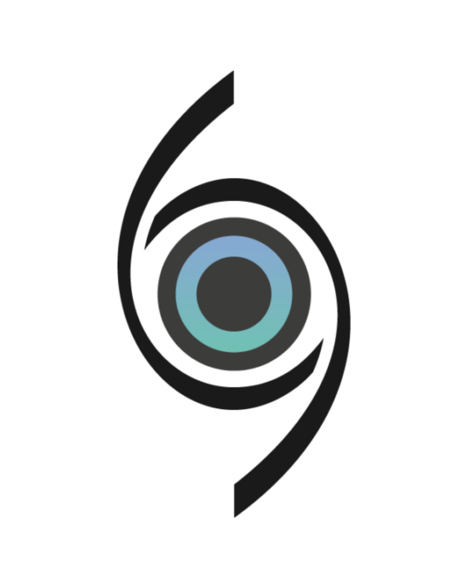

Recupere o Conforto Visual com Atendimento Especializado em Olho Seco em Criciúma.
Uma consulta dedicada a investigar a real origem do seu desconforto ocular, não apenas prescrever colírios.
Fale com nossa equipe para alinhar seu horário
O uso constante de colírios lubrificantes já se tornou um hábito que não resolve mais?
Quem convive com a sensação de areia nos olhos, queimação ao final do dia ou visão borrada diante das telas sabe o quanto isso desgasta a produtividade e o bem-estar.
O olho seco é uma disfunção que exige diagnóstico médico.
O erro mais comum é acreditar que se trata de um incômodo passageiro que se resolve comprando qualquer lágrima artificial na farmácia.
Se a visão está cobrando um preço alto todos os dias, o caminho não é mascarar os sintomas: é investigar o que está acontecendo com a sua saúde ocular.
Você reconhece algum destes sintomas?
Esses são os sinais mais comuns de olho seco. Muitos pacientes convivem com eles sem saber a causa.
Um Olhar Atento e Protocolos Sob Medida para Você.
Cada caso de olho seco tem uma origem diferente. A consulta vai muito além do sintoma, ela investiga o paciente como um todo.
Investigação Detalhada
Consulta minuciosa para compreender seus hábitos, rotina, ambiente de trabalho e as particularidades dos seus olhos, informações que fazem toda a diferença no diagnóstico correto.
Protocolos Personalizados
Sem soluções genéricas. O direcionamento terapêutico é desenhado exclusivamente para o seu caso, com foco em alívio duradouro, não apenas no alívio momentâneo dos sintomas.
Acompanhamento Dedicado
O suporte necessário para que você recupere o prazer de ler, trabalhar nas telas e viver a sua rotina sem o peso constante do desconforto visual.

Dra. Gabriela Zambon
Oftalmologista · Criciúma / SC
Graduada pela Universidade do Extremo Sul Catarinense (UNESC), em Criciúma, a Dra. Gabriela Zambon construiu sua formação em dois dos principais centros de referência em oftalmologia do Sul do Brasil: realizou residência médica em Oftalmologia Geral no Hospital de Clínicas da UFPR (2014–2017) e aprofundou sua formação em Segmento Anterior e Transplante de Córnea no Hospital de Clínicas de Porto Alegre (2017–2018).
Especialista em Oftalmologia pelo Conselho Brasileiro de Oftalmologia, atua com foco em Tratamento do Olho Seco e Cirurgia Refrativa, mantendo-se atualizada por meio de participação regular em eventos e congressos da área. Seu atendimento é conduzido com atenção, dedicação e empatia, buscando compreender cada paciente de forma individualizada para oferecer o tratamento mais adequado à sua realidade.
Dê o Primeiro Passo para Recuperar seu Conforto Visual
Agende sua consulta e receba uma avaliação oftalmológica dedicada ao seu caso. Nossa equipe está pronta para encontrar o melhor horário para você.